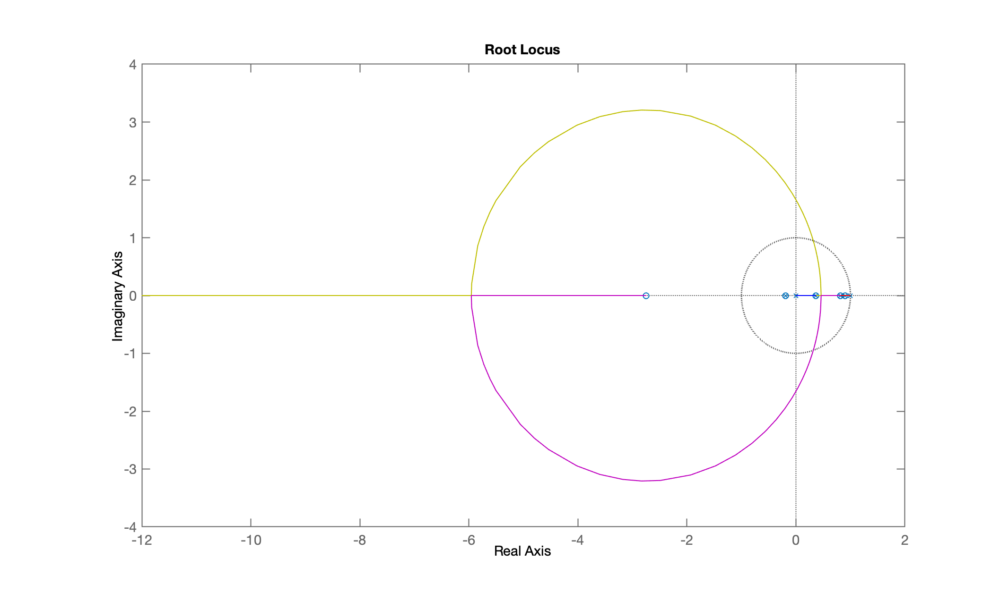
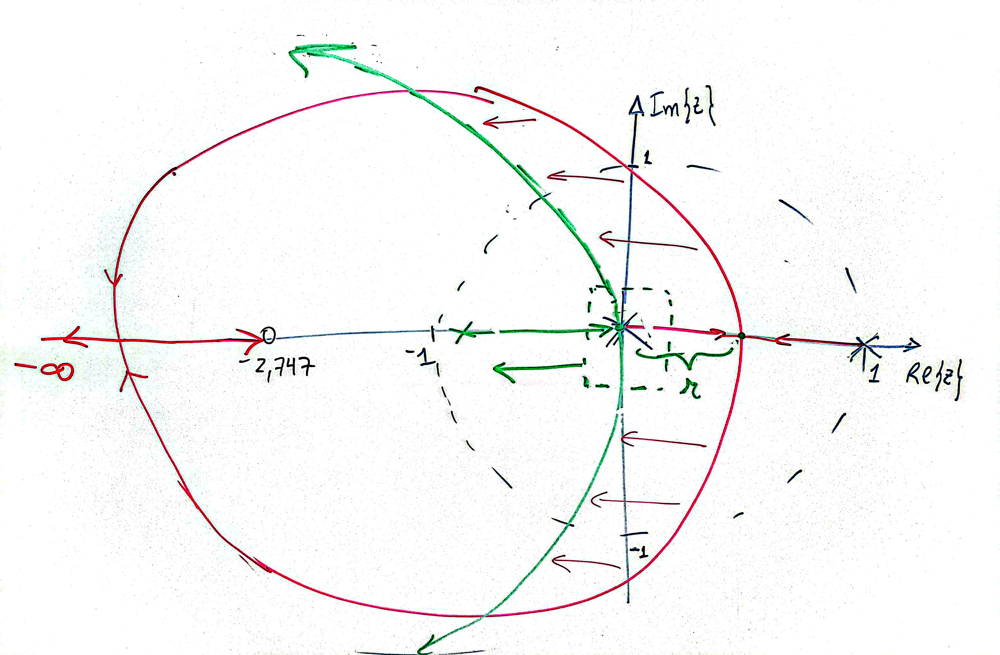

Continuação da aula de 05/05/2025.
Repetindo projeto de um controlador deadbeat simples (aula de 08/10/2019):
Voltando para nossa planta, arquivo: dados.mat:
x>> clear all; close all;>> load dados>> zpk(BoG)ans = 0.00012224 (z+2.747) (z+0.1903) -------------------------------- (z-0.9048) (z-0.8187) (z-0.3679)Sample time: 0.1 secondsDiscrete-time zero/pole/gain model.>> polos_BoG=pole(BoG) % isolando os pólos de BoG(z)polos_BoG = 0.90484 0.81873 0.36788>> zeros_BoG=zero(BoG) % isolando os zeros de BoG(z)zeros_BoG = -2.7471 -0.19031Lembrar que o controlador não pode incluir pólos e zeros "instáveis" (sobre ou fora do círculo unitário).
xxxxxxxxxx>> C_dead=tf(poly(polos_BoG), poly([zeros_BoG(2) 1]), T); % montando C(z)>> zpk(C_dead)ans = (z-0.9048) (z-0.8187) (z-0.3679) -------------------------------- (z-1) (z+0.1903)Sample time: 0.1 secondsDiscrete-time zero/pole/gain model.Da forma como está, o grau do numerador está maior que o grau do denominador o que implica num sistema "antecipativo", impossível de realizar na prática. Necessitamos acrescentar um pólo à eq. do controlador acima.
Acrescentando um pólo extra em prevendo o resultado à ser obtido no RL deste sistema:
xxxxxxxxxx>> C_dead=tf(poly(polos_BoG), poly([zeros_BoG(2) 1 -0.5]), T);>> zpk(C_dead)ans = (z-0.9048) (z-0.8187) (z-0.3679) -------------------------------- (z-1) (z+0.5) (z+0.1903)Sample time: 0.1 secondsDiscrete-time zero/pole/gain model.>> ftma_dead=C_dead*BoG;>> zpk(ftma_dead)ans = 0.00012224 (z+2.747) (z-0.9048) (z-0.8187) (z-0.3679) (z+0.1903) ---------------------------------------------------------------- (z-1) (z-0.9048) (z-0.8187) (z-0.3679) (z+0.5) (z+0.1903)Sample time: 0.1 secondsDiscrete-time zero/pole/gain model.>> ftma_dead_r=minreal(ftma_dead, 1E-4); % cancelando termos comuns>> zpk(ftma_dead_r)ans = 0.00012224 (z+2.747) -------------------- (z-1) (z+0.5)Sample time: 0.1 secondsDiscrete-time zero/pole/gain model.>> rlocus(ftma_dead)E então temos o RL:

Note que foi arbitrado o pólo extra do controlador em . Notamos pelo RL anterior que seria melhor que este pólo "extra" estivesse em . A idéia é obter algo como:

Finalizando na próxima aula, em 19/05/2025.
Finalizando esta seção de trabalho:
xxxxxxxxxx>> save dados>> diary off>> quitFernando Passold, em 05/05/2025